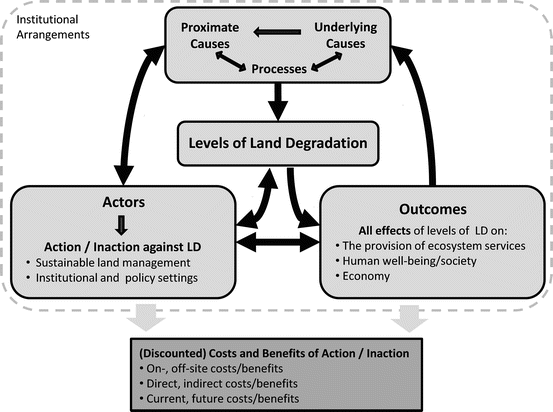

12.1 Introduction
Land degradation (LD) has affected many parts of the world for centuries and is reported to be increasing in extent and severity. LD has negative consequences on the productivity of land and the ability to provide ecosystem services, and thus increases environmental and social vulnerability. As used in this chapter, LD captures comprehensively the terms ‘land and soil degradation’ as well as ‘desertification’ and refers to the long-term decline of ecosystem function and productivity. In this matter we followed the most recent definitions of LD (Nachtergaele et al. 2010) used by The Global Land Degradation Information System (GLADIS).
Humid areas of the world account for a higher share of the world’s total degraded land (78 %) than previously thought (Bai et al. 2008a). Nonetheless LD of arid and semi-arid areas (often referred to as desertification) remains a significant global problem because they host 38 % of the world’s population (Reynolds et al. 2007) and are typically less resilient to environmental disturbance than more humid areas. According to the Global Land Degradation Assessment (GLADA) LD is increasing, with almost one-quarter of the total global land area having been degraded between 1981 and 2003. Furthermore Nachtergaele et al. (2010) estimate that 1.5 billion people depended on degraded areas (to variable degrees) for their livelihoods in 2007, while in excess of 42 % of the world’s very poor population lived in degraded areas.
LD is influenced by natural and anthropogenic factors, including socioeconomic conditions. Most human-induced LD occurs as a result of the interactions between the land and its users (Vlek et al. 2010). LD is of importance to humans because it negatively affects the provision of ecosystem services and the benefits they provide to human well-being. Unfortunately and despite considerable advances in the economic valuation of ecosystem services in recent years, there are still many gaps in the valuation of such services, including the economic valuation of specific ecosystem services and the geographic dimension of such valuation. LD can be particularly detrimental to ecosystem function and human well-being in arid and semi-arid areas, where the meaningful valuation of ecosystem services has been under-represented.1
LD can affect any ecosystem, including anthropogenic ecosystems such as agro-ecosystems, forestry plantations, rangelands, and urban areas (Ellis and Ramankutty 2008). Anthropogenic and natural ecosystems provide environmental support and regulation services (e.g., nutrient and hydrological cycling, climate regulation, etc.). Hence the impacts of LD on human well-being should be assessed across all terrestrial ecosystems for an accurate valuation of these impacts. The links between human well-being and LD are multiple and multi-directional due to the variety of human benefits derived from ecosystem services. Furthermore human well-being and especially human ‘ill-being’ (i.e., poverty) can be both a cause and a consequence of LD.
LD impacts human well-being in several dimensions or components. The Millennium Ecosystem Assessment (MA 2005) described the links between ecosystem services and human well-being using four broad dimensions: security, basic living material, health, and social relations. Balmford et al. (2008) showed that the value of ecosystem services is best accounted for when ecosystem services are translated into benefits to humans (i.e., food, water, material, energy, property, health, psychological well-being). Ecosystem services as defined by MA (2005) mostly refer to processes such as nutrient and hydrological cycling, and cannot be directly valued without incurring the risk of over-estimating (e.g., land restoration through afforestation can be valued for the environmental regulation services it provides and also for material benefits such as fuel, construction, or pulp wood). McGregor and Summer (2009) defined human well-being in the context of development as being three dimensional: material, relative, and subjective. These dimensions are linked to “the resources that a person is able to command…what needs and goals they are able to meet [and] the meaning that they give to these goals” (McGregor 2006, 4). Economic assessments of the impacts of LD on human well-being generally concentrate on the first two points: how LD affects resource availability and use, and how those effects impact the choices and goals of resource consumers and society at large.
Several authors have modeled relationships between the state of the environment and human well-being. One recurrent question has been whether lower levels of well-being (e.g., measured as limited socioeconomic development or poverty rates) lead to more or less destructive resource use and management practices. From the literature it can be concluded that a clear consensus on the relationship between poverty and LD does not exist. The levels of LD resulting from land use practices involve complex and dynamic processes and multiple feedback and synergistic effects that tend to be local, specific, and cannot be analyzed at the global scale. An effective analysis would require close attention to local circumstances, in terms of the environment and of socioeconomic characteristics, including institutional frameworks. Theoretical models of development and resource degradation help explain how these dynamics may play out in specific settings (Reardon and Vosti 1995; Grepperud 1997; Bulte and van Soest 2001; Carter and Barrett 2006; Barbier 2010).
12.2 Conceptual Framework
To investigate the relationships between poverty and LD it is useful to place them in the broader context of an assessment of LD, including its causes, consequences, and costs. Figure 12.1 presents a conceptual framework for this broader context. The rounded boxes represent physical elements of the system under consideration that have direct relationships, and the black arrows denote the directionality of impact flow. The proximate causes of LD include: biophysical factors (climatic conditions, topography, etc.) and unsustainable land management techniques (clearing, over grazing, etc.). The underlying causes of LD include the policies and institutional or other socioeconomic factors that determine land management practices. Proximate and underlying causes may be related to each other, for instance through feedback loops or synergistic processes, making it difficult to assess the influence of a single factor. National, international, and local policies and strategies; access to markets; infrastructure; the availability of appropriate agricultural extension services; population density; poverty; and land tenure conditions are all underlying causes that have been empirically associated with LD. For example, poverty could contribute to the failure to invest in sustainable land management practices. Similarly policies that enhance investment in land management, such as payments for ecosystem services resulting in reforestation of steep slopes can mitigate the proximate causes of LD (soil erosion on denuded slopes). Increasing population density may lead to increased investment in land management (Boserup 1965; von Braun et al. 1991; Tiffen et al. 1994) or to LD (Grepperud 1996) depending on situational factors.

Fig. 12.1
A conceptual framework for the analysis of the economics of land degradation (Based on Nkonya et al. 2011a)
The level and type of LD determine its outcomes or effects—whether on-site or off-site—on the provision of ecosystem services and the benefits humans derive from those services. If actions to halt or mitigate LD are taken, the actors involved should be determined by the causes of LD that need to be addressed, the level of degradation, and by its effects. Actors can then take action to control or counter the causes, levels, or effects of LD.
Many ecosystem services are not traded in markets, so the beneficiaries do not directly pay for those services. The economic concept of externalities refers to the costs and benefits arising from the production or consumption of goods (or ‘bads’) and services for which no appropriate compensation is paid (e.g., on- and off-site environmental effects such as sedimentation, and indirect societal effects such as emigration and food insecurity). The values of such externalities are not necessarily considered in land-use decisions, often leading to the undervaluation of land and of ecosystem services, and to levels of LD that are not socially optimal (the social optimum is reached when the marginal social costs of LD are equal to the marginal social costs of action to prevent or rectify it).
The dark square box at the base of Fig. 12.1 represents a cost/benefit analysis of the human impacts of LD. The light arrows indicate the flow of information necessary to perform such an analysis. A decrease in the provision of ecosystem services and their benefits has direct economic costs to humans, such as decreased food security and increased food prices. In addition LD has indirect negative effects of economic importance to humans: LD affects land prices and the prices of the goods produced on it. The impacts of LD on economic sectors directly linked to land use have indirect, economy-wide effects that are passed to other sectors by multiplier effects. Direct and indirect effects of LD can broadly affect poverty and national income, and thus have far-reaching socioeconomic consequences. Ideally all direct and indirect effects of LD would need to be accounted for in an assessment of its social and environmental costs. The causal relationships represented in Fig. 12.1, as well as their magnitudes, are partly determined by a broad set of institutional arrangements—or the ‘rules of the game’ influencing how actors make decisions. For example, excessive use of groundwater for irrigation has resulted from a lack of direct financial costs based on the volume of water used.
12.2.1 The Dynamic Nature of LD
Degradation of an ecosystem may not translate directly or immediately into a noticeable loss of ecosystem services and benefits. Generally speaking ecosystems can sustain some level of degradation before reaching a threshold after which ecosystem function declines (often rapidly) in one or more dimensions (TEEB 2009). The impacts of specific LD processes and of the actions used to mitigate them become apparent over time in a way that is often nonlinear. For instance, the impacts of afforestation on nitrogen cycling are clearly time dependent. Similarly, erosion has a nonlinear impact on crop yields due to the fact that the initial stages of topsoil depletion represent a greater loss of nutrients and productivity than subsequent erosion. Facing such dynamic and nonlinear processes and relationships, it is important to analyze them accordingly. This requires analysis of the impacts of changes in LD on the economy, as well as the impacts of changes in socio-economic factors on LD levels.
In this context the choice of discount rates and the time horizon for the cost-benefit analysis is crucial. High discount rates indicate a strong time preference for the present (a 10 % yearly discount rate indicates that a $1 investment today must provide a $1.1 return in 12 months to justify the initial investment). They tend to discourage investments that generate long-term benefits and favor those that create short-term benefits but also significant long-term costs. From a society’s perspective the latter case is not desirable. From an individual’s perspective it might be a rational decision to adopt practices that maximize short-term benefits even if they contribute to LD in the long-term.
Particularly in a poor economy, the basis of land use decisions made by individuals often reflects their preference for the immediate or short term benefits and is often much different from what a social planner with a long-term perspective would adopt. Private individuals’ preference for the short term, conceptually reflected in high private discount rates, may be due to constrained land management choices due to poverty, leading to LD rather than sustainable practices, or else due to high levels of risk aversion in determining land-use practices. In some cases LD, poverty, and short-term temporal preferences can be interrelated and synergistic. As poverty increases land use practices are increasingly determined by immediate need, thereby accelerating LD. The resulting increase in LD reduces ecosystem function and its ability to provide the services and benefits upon which the land users (and others) depend, aggravating poverty and thus increasing incentives for basing land-use decisions on short-term outcomes.
At this stage it is important to stress that such synergy is not a universal or necessary feature of the poverty-LD nexus. As discussed in this chapter, there is no consensus in the literature on the general relationships between poverty and LD. Indeed these deleterious spiral effects can be avoided. An essential dynamic to mitigate in such a context would be the increasing poverty trend. There are several examples of schemes that target this dynamic. For instance, guaranteeing secure land tenure may help induce farmers to adopt long-term approaches to land management. Payments for ecosystem services can alleviate the impacts of poverty on low investment in sustainable land management. The success of any such measures and programs will be dependent on their design and administration.2
12.3 Global Indicators of LD
A number of efforts have attempted to assess LD at the global scale (Nkonya et al. 2011a). The Global Assessment of Human-induced Soil Degradation (Oldeman et al. 1991) evaluated the extent and severity of soil degradation across climate types based on expert judgment, which helped raise awareness about global soil degradation. In response the World Overview of Conservation Approaches and Technologies network (WOCAT) initiated efforts to help prevent and reduce LD through sustainable land management (SLM) practices in 1992 by documenting and evaluating soil and water conservation measures worldwide. The Land Degradation Assessment in Drylands (LADA) and the Global Land Degradation Assessment (GLADA) projects of the FAO made use of geographical information systems and remote-sensing data to map LD between 1981 and 2003. More recently the GLADIS effort (Nachtergaele et al. 2010) assessed global LD using a combination of biophysical and socioeconomic indicators (biomass, soil, water, biodiversity, economic, and socio-cultural). Methodological concerns about the LADA, GLADA, and GLADIS efforts are discussed in Nkonya et al. (2011a).
Most studies use land-cover changes as indicators to approximate LD. Land-cover change is the most direct and pervasive anthropogenic effect used to determine trends in land status (Vitousek 1994). Many studies have used the normalized difference vegetation index (NDVI) and related indices as indicators of changes in ecosystem productivity and LD. NDVI measures vegetation cover and thus analyses of changes in vegetation cover based on NDVI may conceal some forms of LD. For example, the encroachment of weeds and alien species or the effects of carbon fertilization on degraded lands (Vlek et al. 2010) may be perceived as land improvements on the basis of NDVI analyses. In addition, land-use changes such as the conversion of agricultural areas into residential areas may be difficult to identify using NDVI data based analyses. Despite these and other disadvantages (Nkonya et al. 2011a) NDVI remains one of the most widely used analytical tools for providing information about the condition of the aboveground biomass based on remote sensing images, especially at the global scale.
The methods, assumptions, and extent of LD in each of these studies varied and therefore are not directly comparable to one another (Nkonya et al. 2011a). For a global assessment of LD and its links to poverty, analyses of remote-sensing images and geo-referenced data are definitely needed. However, assessment results should be validated on the ground before they can be considered reliable. In particular, the empirical results presented in the meta-analysis suggest that some of the links between population density and LD, and between economic growth and LD (Figs. 12.2 and 12.3),3 display complex regional differences. For instance, the maps illustrate that a decrease in NDVI can be associated with either an increase or decrease in population density in neighboring areas (Fig. 12.2, data from the western Sahara), and also with either an increase or decrease in GDP (Fig. 12.3, same region). This clearly supports the idea that targeting population density or poverty alone will not improve LD. Population density and poverty can be underlying causes of LD, but need not be depending on their combination with other causal factors and institutional frameworks (such combinations are not captured in Figs. 12.2 and 12.3).
In order to support SLM globally, cost calculations of global LD are urgently needed for a comparison with the costs of remedial efforts. Such cost assessments need to rely on a clear theoretical framework that links the causes of LD and their consequences in terms of their marginal impact on LD levels. The links between local poverty, development, and food security; their indirect impacts on global society; a clear investigation of the strong regional and national dimensions of LD; and the extent and severity of LD are essential elements for building this framework.
12.4 The Links Between Poverty and LD
LD is important because of its direct effects on:
- the range of land use activities that people can undertake and the range of services provided by the land—in other words LD restrains land use choices and options
- the productivity of land-use activities and ecosystem services, and the economic returns they generate
- the intrinsic value of land
Degradation affects the economic value of land because such values are based on the capacity to provide services and benefits. These benefits include not only physical outputs (e.g., food and resources), but also other services that are beneficial to human well-being (e.g., recreation). The ethical, philosophical, and cultural dimensions of ecosystem valuation, as well as the intrinsic value of land, are not part of the scope of our evaluation of the links between LD and human well-being.
Considering that LD negatively affects people and society both directly and indirectly, why does it take place and why are investments in SLM not reversing, or at least halting LD worldwide? Is poverty a major cause of this under-investment, and if so, through what mechanisms? In this chapter we focused on the case of LD in developing countries, as there is little doubt that socially sub-optimal LD in the industrialized world is not an issue of poverty.
The lack of consensus on the relationships between LD and poverty can be extended to the global context of poverty and natural resource depletion. Nkonya et al. (2008, 8) attribute this fact to the “complexity and context dependence of the linkages [and] to the lack of comparable empirical evidence on these issues.” Multiple examples of the linkages between poverty and LD are illustrated in a figure that leaves no doubt about the complexity of the issue (Fig. 12.4), and its uncertainty in terms of the nature of some of the linkages or indeed their existence (Nkonya et al. 2008, 9–10). The authors also reviewed established empirical links between poverty and LD with an emphasis on the contradictory nature of the published results, and made a strong case for the contextual dependency of such results. Furthermore, a concept as broad as poverty is subject to different interpretations and definitions. The adoption of a specific definition over another, or a narrow focus on a specific dimension of poverty (e.g., income level) over another (e.g., access to markets) can lead to contrasting empirical findings in terms of the links between poverty and LD. That meta-analysis (Nkonya et al. 2011a) also found that while some studies support the association of poverty with behavior based on short-term perspectives, other studies found that such behaviors were not correlated to income levels. Some studies have found a positive link between high discount rates and lower willingness to pay for conservation, while other studies have found that poor farmers facing negative shocks prefer to reduce consumption in order to preserve their assets (including land).
Fig. 12.4
Possible linkages between poverty, land management, land degradation, and agricultural productivity, with associated factors. The nature of the linkages followed by (?) are undetermined. (Nkonya et al. 2008)
In this section we discuss some of the theoretical treatment of the poverty/LD interrelationships found in the literature. In economic studies it is now common practice to use inclusive definitions of poverty that consider physical, human, natural, and financial limitations, and even access to infrastructure and services, which should be given priority over restrictive definitions linked to indicators of income or consumption. Nkonya et al. (2008) adopted a comprehensive definition of poverty that intended to encompass all matters that constrain the land management decisions of farmers (access to different forms of capital, infrastructure, markets, services, education, etc.). This broad definition of poverty is consistent with the notion of ‘investment poverty’ developed by Reardon and Vosti (1995), and with more recent work on poverty traps (Carter and Barrett 2006). The latter refers to the ‘assetless’ poor whose situation is characterized by self-perpetuating patterns of poverty: poor farmers become locked in a dynamic of contributing to environmental degradation due to a lack of alternatives available to them as a result of a limited asset base.
Barbier (2010, 647–653) presented a simple poverty trap model in which rural households hold only two types of capital, land and labor. The latter can be used for production activities on the land or allocated to external paid labor. In this case a poverty trap is created by labor market dynamics when wage rates for external employment fall below the household’s reservation wage (i.e., the maximum wage at which the household still chooses to allocate zero time for external paid labor). For instance, when LD forces labor off farms on a large scale (due to decreased agricultural labor productivity) it may cause excess labor supply for nonagricultural work. At that stage households will reallocate their labor back to on-farm production activities, further depleting their land resources and locking themselves into a poverty-LD trap. The author postulated that such cases are likely when poor people live on marginal land, which was partially supported by the results of a statistical analysis (Barbier 2010).
Theoretically and in practice, causal linkages between resource degradation and worsening poverty have not been established (Nkonya et al. 2008). In fact resource degradation may be an optimal strategy from the private or household perspective if other activities and assets can be invested in pursuits that yield higher returns. It is then a case of substituting different types of capital to maximize household welfare. As the authors noted, under perfectly functioning market conditions resources are allocated according to their most profitable uses. Under imperfect conditions such as uncertainty, however, market and institutional failures may cause poverty and LD to be closely associated. The form, intensity, and direction of this association may depend on the nature of the market failure, poverty, or the type of LD.
A theoretical example of the relationship between poverty and environmental degradation that has been much discussed in economics literature is the ‘environmental Kuznets curve’ (EKC). The EKC postulates that the relationship between income level and environmental degradation has the shape of an inverted U, that degradation initially increases with income up to a maximum point and thereafter monotonically decreases as income increases continue. The main assumption behind the EKC is that accelerating wealth creation through economic growth encourages the technological progress necessary to counter environmental degradation. The EKC has been discussed empirically and theoretically (Bulte and van Soest 2001; Hill and Magnani 2002), and proven empirically for specific types of degradation (e.g., air pollution in Selden and Song 1994), disproven for others (e.g., deforestation in Koop and Tole 1999), and similarly across regions and countries (Harbaugh et al. 2002). A major theoretical issue lies in the existence and determination of the ‘turning point,’ i.e., the income level at which the sign of the relationship changes. Caviglia-Harris et al. (2009) and Azomahou et al. (2006) further reviewed existing studies that tested the EKC concept. Caviglia-Harris et al. (2009) also tested for the existence of an EKC relationship in the context of a comprehensive indicator of environmental degradation, the ecological footprint, and found no empirical evidence to support it.
Bulte and van Soest (2001) examined the possibility of a (reverse) EKC in a general theoretical setting that was well-suited to developing countries. Their approach is interesting in that it did not rely on the usual trade-offs between production (or consumption) and degradation at various income-levels (as most studies do). Rather the resource management decisions of the households indirectly consider degradation through their allocation of labor time. This set up is particularly suited to the issue of LD, as farm households can effectively choose whether or not to allocate time to specific activities in order to preserve their natural capital (land).4 The authors assumed that households cannot trade labor, but fully allocate it across three activities: agricultural production, preservation/regeneration of their stock of natural capital, and leisure. The households maximize their utility under a budget constraint and simultaneously make decisions on consumption and production (i.e., a non-separable household model). Environmental degradation is accounted for by inter-temporal variations in the stock of the natural resource or by the rate of resource extraction, and changes in income are reflected by changes in the farm output prices. Their interesting results show that under imperfect labor markets, the combined income and substitution effects of rising prices can be either consistent with the EKC hypothesis or not, depending on the choice of environmental degradation indicator.
Salvati and Carlucci (2010, 3–4) noted that most EKC studies focus on air pollution and to a lesser extent on deforestation. They only listed a few studies that examined EKCs in the context of other processes with potential links to LD such as agricultural land use, land cover change, and farmland conversion. Their study empirically tested the links between economic drivers (proxied by per capita value added) and process-specific drivers (crop intensity, irrigation, share of industry in total product, urban land use, and tourism concentration), and LD vulnerability at the district level in Italy. Their LD vulnerability index (LVI) is composed of 14 indicators reflecting soil quality, climate, and land use. The authors tested several specifications of the relationship between per capita value added and LVI, and overall found a negative relationship between economic growth (increase in district-level value added) and the LVI over the period 1990–2000. It must be noted, however, that even though Italy has very significant differences in income and growth levels across regions, these results cannot be taken as a universal illustration of the existence of an EKC for LD. Given the highly disputed theoretical underpinning of the EKC, it can only inform policymaking after it has been thoroughly tested at appropriate spatial scales.
12.5 Case Studies
We chose Niger and India as case studies because both countries have implemented land management policies that have had significant positive impacts despite daunting challenges. Niger is ranked among the poorest countries in the world, yet the country has developed exemplary land management programs, demonstrating that even the poorest countries can achieve SLM with appropriate policies. Niger’s GDP per capita increased from an average of US$475 in 1981–1984 to US$610 in 2003–2006 (based on purchasing power parity [PPP] (IMF 2011)), while deforestation rates in the country decreased from 3.7 % in 1990–2000 to 1.7 % in 2000–2010 (FAO 2011a). Reforested areas increased significantly during the same period and contributed a large share of the reduction in overall deforestation in the country.
India—the second most populous country in the world—has implemented community-based resource management efforts with notable successes. Over the past 20 years India’s economy has been growing fast. Per capita GDP increased from an average of US$529 in 1981–1984 to US$2,068 in 2003–2006 (based on PPP and international dollars (IMF 2011)). Despite an increasing population size and greater demand for forest products, forest cover in India increased by 0.2 % in 1990–2000 and by 0.55 % in 2000–2010 (FAO 2011a).
As seen in Table 12.1, both countries are mostly arid or semi-arid, the amount of arable land area per capita is less than 1 ha, and soil sodicity (i.e., a form of salinity caused by excessive concentrations of sodium in the soil that results from the evaporation of sodium bearing irrigation water and that negatively affects plant growth) is a common issue. Soil erosion is a larger problem than sodicity in India, primarily water-induced erosion. In Niger water induced erosion is limited because of less rainfall and relatively flat terrain, however, wind erosion is a major problem there (Sterk 2003). Soil nutrient depletion, overgrazing, salinity in irrigated cropland, and deforestation are also major problems in Niger.
Table 12.1
Land resources and severity of land degradation
Land resource and severity of degradation | India | Niger |
|---|---|---|
Arable land per capita (ha) | 0.18 | 0.44 |
Arid and semi-arid lands (% of total land area) | 72 | 94 |
Soil erosion hazard (% of total land area) | 29 | 7 |
% of total land area affected by sodicity | 1 | 1 |
12.5.1 Niger
Soil nutrient depletion in Niger is high. On average the country applies only about 0.28 kg of nitrogen per hectare, the second lowest rate in the region. In comparison, the rate of NPK uptake per hectare for millet—the most common crop in Niger—is 56 kg (Henao and Baanante 2006), suggesting that the rate of soil nutrient mining is high. As shown in Table 12.2, the use of organic soil fertility management practices is also limited. Six percent of households used mulching and only 1 % or less adopted similar land management practices. Underscoring the strong association of land degradation and poverty, Nkonya et al. (2011b) showed that the use of chemical fertilizer and organic inputs was lower for poor farmers than for farmers who were not poor. Similarly it is tempting to conclude that there is an association between poverty and the lack of adopting certain land management practices with respect to change in GDP and land management in Niger and Kenya. GDP per capita in Niger (see section above) grew significantly less between 1981–1984 and 2003–2006 than in Kenya (US$764 to US$1,382 based on PPP and international dollars (IMF 2011)), and this pattern reflects a much lower rate of adoption of improved land management practices in Niger than Kenya. However, rural services, institutions, marketing, and other factors also affect the adoption of certain land management practices.
Table 12.2
Adoption rates of land management practices in Niger and Kenya
Practice | Nigera
| Kenyaa
|
|---|---|---|
Use of chemical and organic fertilizer | 0 | 33.0 |
Animal manure application | 1.0 | 68.0 |
Improved fallow | 0.6 | 4.9 |
Crop-residue incorporation | 0.1 | 34.4 |
Mulching | 6.4 | 35.2 |
Rotational grazing | 0.4 | 7.5 |
Water harvesting | 0.4 | 17.2 |
Livestock production is the major source of income in the arid and semi-arid regions of the country and overgrazing is a major problem. The average stocking rates in Niger (in terms of tropical livestock units [TLU]) increased from about 0.25 TLU/ha in 1992 to a little over 0.4 TLU/ha (Nkonya et al. 2011a).5 That study also evaluated the effects of overgrazing in Niger and found that overgrazing reduced forage yields by an average of 32 %, which has led to associated losses in beef carcass weights and milk production.
Costs of action and inaction. Nkonya et al. (2011a) estimated the costs of action and inaction at the farm level. The costs of action are the costs a farmer will incur by engaging in efforts to address LD, whereas the costs of inaction are the losses the farmer will incur due to the effects of LD if no remedial actions are taken. In the case of soil nutrient depletion, the study evaluated sorghum, millet, and rice production and estimated the loss of profits due to exclusive use of passive crop residues as a soil fertility management practice. To determine the costs of inaction, sole reliance on passive crop residue was compared with the use of: 40 kg of nitrogen per hectare, 1.67 tons of manure per hectare, and the active incorporation of 50 % of crop residues. The results indicated annual national level profit losses due to exclusive reliance on passive crop residues reaching US$6 million for rice, US$133 million for millet, and US$157 million for sorghum. The availability of fertilizers and appropriate training in fertilizer application are limiting factors in the case of poor farmers. Well known systems exist to overcome such barriers (e.g., contract farming, subsidies, extension services, etc.), their success in terms of using SLM practices and poverty reduction being somewhat case specific.
In the case of sodicity the costs of action are the costs of the water and labor required for leaching. The cost of inaction is the value lost due to sodicity. This cost is estimated by determining the difference between the net present value (NPV) of leaching practices and the NPV without desalinization. The study showed that the costs of action were only about 10 % of the costs of inaction per hectare, indicating the high costs that farmers suffer for not addressing sodicity problems, as well as the importance of LD costs in terms of income and annual GDP loss (8 %) due to salinity. Nonetheless poverty may prevent farmers from taking action, especially if the water and labor costs for leaching are up-front costs. Without financial support poor farmers are left to suffer decreasing yields and benefits, thus increasing the risk of poverty and further LD.
Land management success stories in Niger. Niger is one of the few Sub-Saharan African countries that has achieved remarkable land rehabilitation results. The government and development partners have invested in land management programs because the majority of the population depends heavily on the land. The ‘Special Program of the President,’ Projet de Gestion des Ressources Naturelles (Natural Resources Management Program), and more than 50 other programs have been implemented by the national government, NGOs, and donors since the early 1980s (World Bank 2009). In addition to these efforts the government has also restructured its institutions and passed a rural code in 1993 that gave traditional leaders more power to manage land, and encouraged them to engage in reforestation efforts and allows them to benefit from such efforts without government intervention. Allowing the poor to benefit from conservation actions was a key incentive for active land management. For instance, the forest policy gave landholders tenure rights to the trees that they planted or protected (Yatich et al. 2008; World Bank 2009). In addition the government promoted contract farming in state-controlled forests (Yatich et al. 2008). These policies created a sense of proprietorship and helped provide the economic incentives needed to protect the forests. The sales and subsistence use of forest products also helped farmers cope with agricultural production risks.
These policies and investments have led to the significant recovery of forest cover in the Sahelian regions where they were implemented. For example, villages where the Projet Intégré Keita; Projet de Développement Rural de Maradi operated were found to be much greener than what could be explained by change in rainfall only (Herrmann et al. 2005; Adam et al. 2006; Reij et al. 2008). In total, tree planting and protection efforts have led to the restoration of forest cover on three million hectares (Adam et al. 2006).
Other important factors contributed to this remarkable success. The droughts that occurred during the 1970s and 1980s led to a loss of vegetation that increased the perceived value of shade produced by trees. The loss of vegetation also increased the difficulty of collecting firewood and reduced forage available to the livestock sector, especially in northern Niger where trees provide fodder during the dry season. Hence tree scarcity significantly affected livelihoods in rural communities, prompting residents to shift from land-clearing to reforestation. The national government of Niger also responded to this challenge. In the 1970s it started to aggressively promote reforestation and changed Independence Day to National Tree Day.
NGOs and religious organizations also helped significantly in building the capacity of local institutions to manage natural resources and mobilized communities to plant and protect trees. For example, the farmer-managed natural regeneration (FMNR) program—in which communities protect or plant new trees in order to benefit from fuel wood, fodder, nitrogen fixation from leguminous trees, reduced erosion due to windbreaks, and other ecosystem benefits—was initiated by a religious organization (Reij et al. 2008). The authors in that study estimated that villages working with FMNR had 10–20 times more trees than before participating in FMNR. Consistent with Bai et al. (2008a), higher tree densities were found in villages with higher population densities (Reij et al. 2008).
The lessons that can be drawn from Niger are the institutional (rural code) and grassroots (NGOs and religious organizations) linkages. These gave local communities the mandate and the capacity to cultivate and manage natural resources. The rural code provision, which allowed communities to benefit from their reforestation efforts also created strong incentives for farmers to invest their limited resources in land management, which alleviated poverty and resource degradation.
12.5.2 India
The nature of land degradation in India is different from what is found in Sub-Saharan African countries. India is among the countries that benefited from the Green Revolution. Agricultural productivity in India has been generally improving due to the increasing use of fertilizers and improved crop varieties. The total factor productivity (TFP) of more than 50 % of the major crops increased from 1970 to 2000 due to the increasing use of fertilizer and other inputs (Table 12.3).
Table 12.3
Trends of total factor productivity growth of major crops in India (Kumar and Mittal 2006)
Crop | Period | Declining TFP | Annual TFP growth <1 % | Annual TFP growth >1 % |
|---|---|---|---|---|
Rice | 1971–1986 | 30.5 | 25.9 | 43.6 |
1987–1900 | 15.0 | 32.8 | 52.2 | |
Wheat | 1971–1986 | 10.3 | 17.3 | 72.4 |
1987–2000 | 2.8 | 74.7 | 22.5 | |
Coarse cereal | 1971–1986 | 19.8 | 9.6 | 70.5 |
1987–2000 | 60.2 | 9.8 | 30.1 | |
Pulse bean | 1971–1986 | 42.8 | 36.6 | 20.5 |
1987–2000 | 69.2 | 26.6 | 4.2 | |
Oilseed | 1971–1986 | 35.6 | 18.3 | 46.1 |
1987–2000 | 28.3 | 10.6 | 61.1 | |
Sugarcane | 1971–1986 | 20.3 | 61.0 | 18.6 |
1987–2000 | 90.9 | 5.4 | 3.7 | |
Fiber | 1971–1986 | 53.8 | 7.2 | 39.0 |
1987–2000 | 32.5 | 1.4 | 66.1 | |
Vegetables | 1971–1986 | 0.0 | 27.5 | 72.5 |
1987–2000 | 27.5 | 0.0 | 72.5 |
Overexploitation of groundwater is one of India’s major environmental problems. Approximately 63 % of total cereal production is irrigated and groundwater accounted for 45 % of the 567 km3 of irrigation water used in 2000 (Kumar et al. 2005; de Fraiture et al. 2008). Wheat and rice are the major irrigated cereals; the other cereal crops are largely rain fed (Kumar et al. 2005). Soil salinity is also becoming an increasing problem in areas where crops are irrigated, affecting an estimated 2 % of the cropland in India (FAO 2010). Salinity can reduce crop rice yields by up to 22 % (Nkonya et al. 2011a). The costs of action for mitigating LD in this case include the costs of desalinization, which involves staggered leaching of salts. The annual cost of irrigation water in India varies from US$0.0 to as high as US$470/ha in Gujarat (Cornish et al. 2004). The costs of desalinization in Gujarat were estimated to be about US$127/ha (Nkonya et al. 2011a). As seen in Niger, the costs of action are less than the costs of inaction, suggesting that inaction is not due to the lack of an economic incentive. Shouldering these costs may simply not be possible for many farmers, who may eventually be forced to abandon their land and move to other (marginal) areas.
Three land management success stories in India. India has had mixed success with community-based watershed management strategies. A study in Tamil Nadu evaluated the impact of community-based watershed management through Panchayati Raj (traditional governance) institutions, local user groups, and NGOs. Results showed that community-based watershed management efforts in Tamil Nadu have raised water tables, improved the reliability of wells, and increased the availability of water for agriculture and domestic use (Kuppannan and Devarajulu 2009). These findings are consistent with other studies that have found cases of successful community-based natural resource management in India and elsewhere (Ostrom and Nagendra 2006; Kerr 2007). The examples in India illustrate the importance of participatory and bottom-up approaches that place natural-resource management responsibilities into the hands of local institutions and communities. A review by Darghouth et al. (2008) found that participatory watershed management was successful when the programs were of common interest to the community, were flexible, and offered mechanisms for capacity building and empowerment of local communities. Community-based watershed management efforts have not been effective in managing larger watersheds (Darghouth et al. 2008), or where culturally or economically diverse communities are involved (Kerr 2007). These findings suggest the need for creating well-coordinated linkages that address complex watershed management scenarios.
India is one of a few countries that have seen significant improvements in rain fed agriculture performance (Bai et al. 2008b), due in part to successful agroforestry and renewable energy programs. Such improvements are evidence of the potential of SLM practices for combating LD and improving agricultural productivity. A contributing factor to the increased NDVI values in rain fed agricultural areas of India is the significant development of agroforestry, which is a traditional practice (Pandey 2007). Agroforestry plantations cover approximately 17 million hectares in India (Pandey 2007), equivalent to about 10 % of the country’s agricultural area (FAO 2008). India is also one of the leading producers of jatropha, a multi-purpose crop often used as a biofuel that can grow on highly-degraded soils and in arid areas. Jatropha cultivation has helped reclaim 85,000 ha of degraded land in northern India (ICRAF 2008). Jatropha production on highly degraded lands has helped alleviate poverty, beneficiaries of a project in northern India earned an average of US$1,200 annually per producer from sales of jatropha seed only 3 years after initial investments. Targeting degraded lands is one of the key features of this project, which has the potential to reclaim up to 30 million hectares of severely degraded land in India (ICRAF 2008).
India enacted the National Rural Employment Guarantee Act in 2006. Under this social protection act participants are guaranteed employment for at least 100 days per year (UNEP 2011). About 84 % of the public works executed under this program have addressed water conservation, irrigation, and land management investments. It is estimated that the program has provided three billion workdays and benefited 58 million households (UNEP 2011). Even though there have been challenges with such programs in India and elsewhere (Deshingkar et al. 2005) they have shown to be win-win public investments, creating employment, reducing poverty, and enhancing the land and water resources (UNEP 2011).
12.6 Conclusion
To close this chapter we want to re-emphasize the complexity and plurality of the types and magnitudes of the causal relationships between poverty and environmental degradation. The wide array of relationships between LD and poverty were confirmed by literature review, where it is difficult to find an empirical based consensus on the nature of the links between the two. The breadth of the nature of poverty–LD linkages can be explained by several factors. First, there are several feedback and synergistic effects between the different causal factors of LD, therefore the true impact of poverty on LD cannot be captured in a bivariate analysis. Second, there are feedback effects between poverty and LD that make it harder to determine the direction of the causality. Finally, the institutional framework within which land users operate and make their land management decisions can supersede the impacts of poverty on LD. This was clearly exemplified by case studies in Niger and India. All of these empirical findings were shown to be independent of the cost effectiveness of SLM practices (Nkonya et al. 2011a), and are echoed in the theoretical literature on poverty and growth and their links to environmental degradation. The existence of an EKC has been debated at length. Bulte and van Soest (2001) showed that under imperfect labor markets, the combined income and substitution effects of rising resource prices can lead to an allocation of farm labor that is either consistent with the EKC hypothesis or not, depending on the choice of environmental degradation indicator.
Poverty as well as LD can be accounted for using a wide variety of indicators, the choice of which will influence the understanding gained about any particular linkage, which can differ vastly across regions and countries. A global and inclusive definition of poverty is inevitably linked to a general concept of well-being and welfare. There are currently no established indicators at the global-level that fully capture the variability in human well-being. Well-being is partially attributable to the state of the environment. This can be captured to some extent by global indicators such as genuine savings (Aglietta 2010), which adjusts the savings rate for the depletion of natural resources in particular. However, as noted in Nkonya et al. (2008), LD is a form of ‘squandering’ that is not addressed by any current frameworks and indicators of well-being, not even in measures of genuine savings. This needs to change, because productive land is a global public good that is increasingly under pressure to deliver the required ecosystem benefits to support a growing world population, sparking increasing competition over its ownership (Deininger and Byerlee 2011). A first step towards the inclusion of LD into general measures of well-being that truly reflect the state of the environment is a systematic and science-based assessment of the extent, severity and costs of LD worldwide (Nkonya et al. 2011a).
References
Adam T, Reij C, Abdoulaye T, Larwanou M, Tappan G (2006) Impacts des Investissements dans la Gestion des Resources Naturalles (GRN) au Niger: Rapport de Synthese. Niamey. Centre Régional d’Enseignement Specialisé en Agriculture (CRESA)/The Freedom University of Amsterdam, Niamey/Amsterdam
Aglietta M (2010) Sustainable growth: do we really measure the challenge? Paper presented at the eighth Agence Française de Développement, European Development Research Network conference, Paris, 1 December 2010
Azomahou T, Laisney F, Van Nguyen P (2006) Economic development and CO2 emissions: a nonparametric panel approach. J Public Econ 90(6–7):1347–1363CrossRef
Bai ZG, Dent DL, Olsson L, Schaepman ME (2008a) Proxy global assessment of land degradation. Soil Use Manag 24(3):223–234CrossRef
Bai ZG, Dent DL, Olsson L, Schaepman ME (2008b) Global assessment of land degradation and improvement. 1. Identification by remote sensing. GLADA report 5 (November). Report 2008/01. International Soil Reference and Information Center, University of Wageningen, Wageningen
Balmford A, Rodrigues A, Walpole M, ten Brink P, Kettunen M, Braat L (2008) The economics of biodiversity and ecosystems: scoping the science. European Commission, Cambridge
Barbier E (2010) Poverty, development, and environment. Environ Dev Econ 15:635–660CrossRef
Boserup E (1965) The conditions of agricultural growth: the economics of agrarian change under population pressure. Aldine Press, New York
Bulte EH, van Soest DP (2001) Environmental degradation in developing countries: households and the (reverse) environmental Kuznets curve. J Dev Econ 65:225–235CrossRef
Carter MR, Barrett CB (2006) The economics of poverty traps and persistent poverty: an asset-based approach. J Dev Stud 42(2):178–199CrossRef
Caviglia-Harris JL, Chambers D, Kahn JR (2009) Taking the “U” out of Kuznets: a comprehensive analysis of the EKC and environmental degradation. Ecol Econ 68(4):1149–1159CrossRef
CIESIN Center for International Earth Science Information Network (2010) Global distribution of poverty. Center for International Earth Science Information Network, New York. http://sedac.ciesin.columbia.edu/povmap/ds_info.jsp. Accessed 3 Aug 2012
Cornish G, Bosworth B, Perry C, Burke J (2004) Water charging in irrigated agriculture. An analysis of international experience, FAO water report 28. Food and Agriculture Organization of the United Nations, Rome
Darghouth S, Ward C, Gambarelli G, Styger E, Roux J (2008) Watershed management approaches, policies, and operations: lessons for scaling up, Water sector board discussion paper 1. World Bank, Washington, DC
De Fraiture C, Giordano M, Liao Y (2008) Biofuels and implications for agricultural water use: blue impacts of green energy. Water Policy 10(1):67–81CrossRef
Defoer T, Budelman A, Toulmin C, Carter S (2000) Building common knowledge: participatory learning and action research. In: Defoer T, Budelman A (eds) Managing soil fertility in the tropics. A resource guide for participatory learning and action research. Royal Tropical Institute, Amsterdam, pp 23–35
Deininger K, Byerlee D (2011) Rising global interest in farmland: can it yield sustainable and equitable benefits? World Bank, Washington, DCCrossRef
Deshingkar P, Johnson C, Farrington J (2005) State transfers to the poor and back: the case of the food-for-work program in India. World Dev 33(4):575–591CrossRef
Ellis EC, Ramankutty N (2008) Putting people in the map: anthropogenic biomes of the world. Front Ecol Environ 6:439–447CrossRef
FAO (2008) FAOSTAT Online agricultural data. Food and Agriculture Organization of the United Nations, Rome. http://faostat.fao.org. Accessed 25 June 2012
FAO (2010) Land resource potential and constraints statistics at country and regional level (TERRASTAT). Food and Agriculture Organization of the United Nations, Rome. http://www.fao.org/ag/agl/agll/terrastat. Accessed 25 June 2012
FAO (2011a) State of the world’s forests. Food and Agriculture Organization of the United Nations, Rome
FAO (2011b) FAOSTAT Online agricultural data. Food and Agriculture Organization of the United Nations, Rome. http://faostat.fao.org. Accessed 25 June 2012
GLCF (2011) Global inventory modeling and mapping studies (GIMMS). Global land cover facility, University of Maryland, College Park. http://glcf.umiacs.umd.edu/data/gimms. Accessed 26 June 2012
Grepperud S (1996) Population pressure and land degradation: the case of Ethiopia. J Environ Econ Manag 30(1):18–33CrossRef
Grepperud S (1997) Poverty, land degradation and climatic uncertainty. Oxf Econ Pap 49(4):586–608CrossRef
Harbaugh WT, Levinson A, Wilson DM (2002) Rethinking the empirical evidence for an environmental Kuznets curve. Rev Econ Stat 84(3):541–551CrossRef
Henao J, Baanante C (2006) Agricultural production and soil nutrient mining in Africa: implications for resource conservation and policy development. International Fertilizer Development Center, Muscle Shoal
Herrmann S, Anyamba A, Tucker CJ (2005) Recent trends in vegetation dynamics in the African Sahel and their relationship to climate. Glob Environ Chang 15(4):394–404CrossRef
Hill RJ, Magnani E (2002) An exploration of the conceptual and empirical basis of the environmental Kuznets curve. Aust Econ Pap 41:239–254CrossRef
ICRAF (2008) Agroforestry for food security and healthy ecosystems. World agroforestry center annual report. International Center for Research in Agroforestry, World Agroforestry Center, Nairobi
IMF (2010) World economic outlook data. International Monetary Fund, Washington, DC. http://www.imf.org/external/pubs/ft/weo/2010/02. Accessed 27 June 2012
IMF (2011) World economic outlook data. International Monetary Fund, Washington, DC. http://www.imf.org/external/pubs/ft/weo/2011/01/weodata/index.aspx. Accessed 19 June 2012
Kerr J (2007) Watershed management: lessons from common property theory. Int J Common 1(1):89–110
Koop G, Tole L (1999) Is there an environmental Kuznets curve for deforestation? J Dev Econ 58:231–244CrossRef
Kumar P, Mittal S (2006) Agricultural productivity trends in India: sustainability issues. Agric Econ Res Rev 19:71–88
Kumar R, Singh RD, Sharma KD (2005) Water resources of India. Curr Sci 89(5):794–811
Kuppannan P, Devarajulu SK (2009) Impacts of watershed development programmes: experiences and evidences from Tamil Nadu. Agricultural economics research review 22 (conference number), pp 387–396. http://mpra.ub.uni-muenchen.de/18653. Accessed 22 June 2012
MA (2005) Ecosystems and human well-being—a framework for assessment. Millennium ecosystem assessment. Island Press, Washington, DC
McGregor JA (2006) Researching wellbeing: from concepts to methodology. WeD research paper 20. ESRC Research Group on Wellbeing in Developing Countries, Bath. http://www.welldev.org.uk/research/workingpaperpdf/wed20.pdf. Accessed 25 July 2012
McGregor JA, Summer H (2009) After 2015: ‘3D human wellbeing’, Focus policy briefing 9. Institute for Development Studies, Brighton
Nachtergaele F, Petri M, Biancalani R, van Lynden G, van Velthuizen H (2010) Global land degradation information system (GLADIS), Beta version, an information database for land degradation assessment at the global level, land degradation assessment in drylands technical report 17. Food and Agriculture Organization of the United Nations, Rome
Nkonya E, Pender J, Kaizzi KC, Kato E, Mugarura S, Ssali H, Muwonge J (2008) Linkages between land management, land degradation, and poverty in Sub-Saharan Africa: the case of Uganda, IFPRI research report 159. International Food Policy Research Institute, Washington, DC
Nkonya I, Gerber N, Baumgärtner P, von Braun J, De Pinto A, Graw V, Kato E, Kloos J, Walter T (2011a) The economics of land degradation: toward an integrated global assessment. Peter Lang, Essen
Nkonya E, Place F, Pender J, Mwanjololo M, Okhimamhe A, Kato E, Crespo S, Ndjeunga J, Traore S (2011b) Climate risk management through sustainable land management in Sub-Saharan Africa, IFPRI discussion paper 01126. International Food Policy Research Institute, Washington, DC
Oldeman LR, Hakkeling RT, Sombroek G (1991) Status of human-induced soil degradation, 2nd edn. International Soil Reference and Information Center, University of Wageningen, Wageningen
Ostrom E, Nagendra H (2006) Insights on linking forests, trees, and people from the air, on the ground, and in the laboratory. Proc Natl Acad Sci USA 103(51):19224–19231CrossRef
Pandey D (2007) Multifunctional agroforestry systems in India. Curr Sci 92(4):455–463
Reardon T, Vosti S (1995) Links between rural poverty and the environment in developing countries: asset categories and investment poverty. World Dev 23(9):1495–1506CrossRef
Reij C, Tappan G, Smale M (2008) Re-greening the Sahel: farmer-led innovation in Burkina Faso and Niger. In: Spielman D, Pandya-Lorch R (eds) Millions fed. Proven successes in agricultural development. International Food Policy Research Institute, Washington, DC, pp 53–58
Requier-Desjardins M, Adhikari B, Sperlich S (2011) Some notes on the economic assessment of land degradation. Land Degrad Dev 22:285–298CrossRef
Reynolds J, Stafford Smith M, Lambin E, Turner BL II, Mortimore M, Batterbury SPJ, Downing TE, Dowlatabadi H, Fernández RJ, Herrick JE, Huber-Sannwald E, Jiang H, Leemans R, Lynam T, Maestre FT, Ayarza M, Walker B (2007) Global desertification: building a science for drylands development. Science 316:847–851CrossRef
Salvati L, Carlucci M (2010) Economic development as a determinant of desertification risk: exploring a local-EKC hypothesis. Paper prepared at the 31st general conference of The International Association for Research in Income and Wealth, St. Gallen, Switzerland, 5–11 August 2010. http://www.iariw.org/papers/2010/poster1Salvat.pdf. Accessed 30 July 2012
Selden TM, Song D (1994) Environmental quality and development: is there an environmental Kuznets curve for air pollution emissions? J Environ Econ Manag 27:147–162CrossRef
Sterk G (2003) Causes, consequences and control of wind erosion in Sahellan Africa: a review. Land Degrad Dev 14:95–108CrossRef
TEEB (2009) The economics of ecosystems and biodiversity. An interim report. A Banson Production, Cambridge. http://www.teebweb.org/Portals/25/Documents/TEEB-InterimReport-English.pdf. Accessed 30 July 2012
Tiffen M, Mortimore M, Gichuki F (1994) More people, less erosion: environmental recovery in Kenya. Wiley, London
Tucker CJ, Pinzon JE, Brown ME (2004) Global inventory modeling and mapping studies (GIMMS). Global land cover facility. University of Maryland, College Park
UNEP (2011) Green economy. Pathways to sustainable development and poverty eradication. A synthesis for policy makers. United Nations Environment Programme, Nairobi
Vitousek PM (1994) Beyond global warming: ecology and global change. Ecology 75:1861–1876CrossRef
Vlek PL, Le QB, Tamene L (2010) Assessment of land degradation, its possible causes, and threat to food security in Sub-Saharan Africa. In: Lal R, Stewart BA (eds) Food security and soil quality. CRC Press, Boca Raton, pp 57–86
von Braun J, de Haen H, Blanken J (1991) Commercialization of agriculture under population pressure: effects on production, consumption, and nutrition in Rwanda, Research report 85. International Food Policy Research Institute, Washington, DC
World Bank (2009) Impacts of sustainable land management programs on land management and poverty in Niger, World Bank country report 48230-NE. World Bank, Washington, DC
Yatich T, Kalinganire A, Alinon K, Weber JC, Dakouo JM, Samaké O, Sangaré S (2008) Moving beyond forestry laws in Sahelian countries. Policy brief. World Agroforestry Center, Nairobi
Footnotes
1
This is reflected in the relatively small number of arid and semi-arid area case studies reviewed by TEEB (2009).
2
See Requier-Desjardins et al. (2011) for a more detailed review of instruments for the management of externalities that are suitable for preventing or mitigating LD and desertification.
3
To mitigate the impacts of abnormal years, the baseline and endline for the change in NDVI were computed at an 8 × 8 km resolution for the periods 1982–1984 and 2003–2006 respectively from GLCF (2011) and Tucker et al. (2004). The population data was collected at a 0.5° × 0.5° resolution from 1990 to 2005 (CIESIN 2010). The GDP data for each country was from 1982–1984 and 2003–2006.